Guide
Connecting Google to Engine
Engine reads Search Console, Analytics 4 and Business Profile from your own Google account. Getting there is two separate jobs: once per deployment, an administrator registers a Google sign-in client; then each customer grants access from inside Engine.
Part 2 is the one most people need. If someone has already set Engine up for your team, skip straight to it — connecting your Google account takes about a minute. Part 1 is for whoever provisions Engine, and is done once for everybody.
Part 1 — Register the Google client
Google requires every application that reads a user's data to be registered as a project with a consent screen and a sign-in client. This section walks through it. You need a Google account that can create projects.
Create a dedicated project
Give Engine a project of its own rather than reusing one that already runs something else. The credential created here is shared by every customer who connects, so it should not sit where an unrelated change can rotate it.
Open the Google Cloud console, choose New project, name it
Engine, and use Edit beside the project ID to
replace the generated id with something you will recognise later.
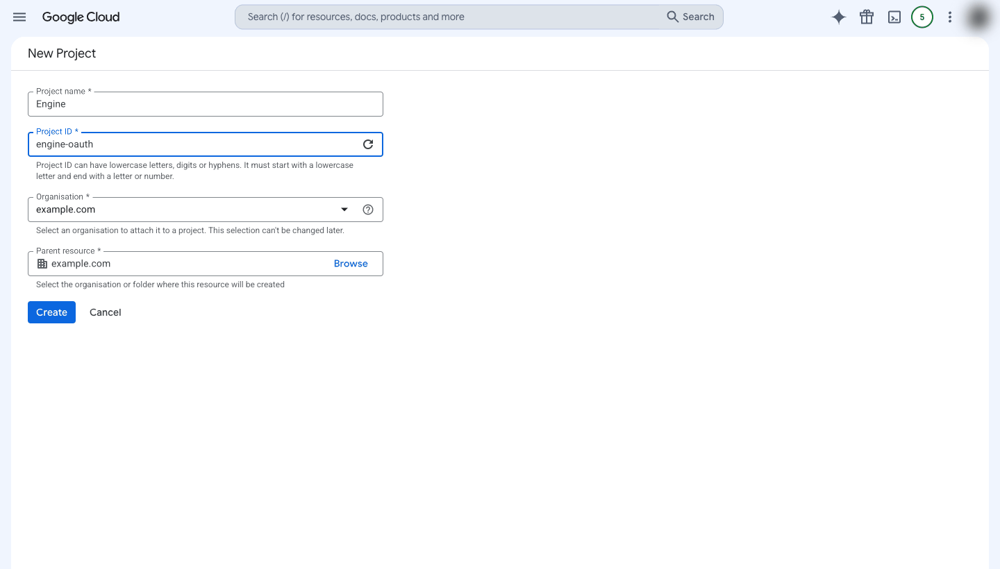
Turn on the Google services
Engine calls six Google services. Each has to be switched on for this project, or requests fail later even though the sign-in itself worked — a confusing way to discover a missing toggle.
| Service | Used for |
|---|---|
| Google Search Console API | Clicks, impressions, CTR and position |
| Google Analytics Data API | Sessions and conversions by channel |
| Google Analytics Admin API | Listing your Analytics properties so you can pick one |
| My Business Account Management API | Finding your Business Profile accounts |
| My Business Business Information API | Reading location details |
| Google My Business API (v4) | Reviews and local posts |
Find each one in the console's API library and choose Enable.
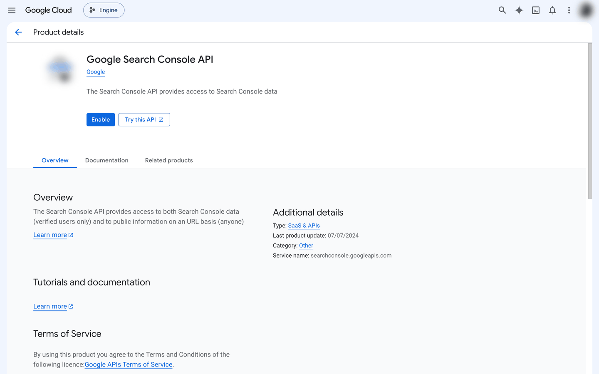
It returns no analytics figures of its own, so it looks unnecessary. It is the service that lists your Analytics properties — without it, the property picker in Part 2 comes back empty and the connection looks broken when it is not.
To confirm one worked, open its details page: Status: Enabled, and the action at the top now offers to disable it.
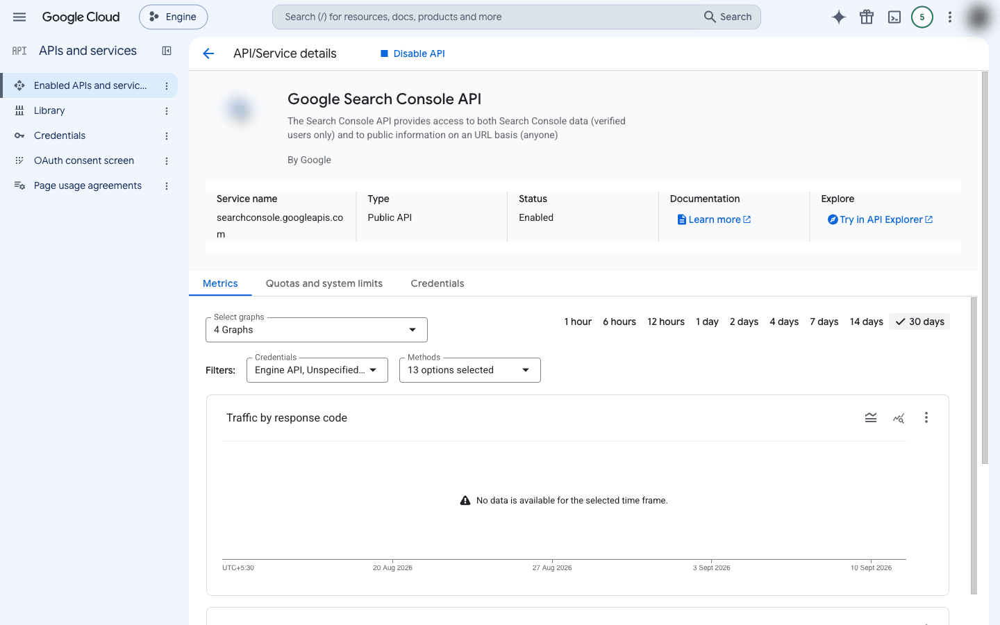
On a brand-new project the library page for the Google My Business API (v4) does not offer an Enable button at all — it fails to load. New projects are given no Business Profile quota, and that service only becomes available after Google approves a separate Business Profile API access request.
This affects Business Profile only. Search Console and Analytics 4 work without it. Until approval lands, Business Profile reads fail even with a correct client and a valid sign-in, so start the request well before you need it.
Set up the consent screen
The consent screen is what your customers read before granting access. In the console this lives under Google Auth Platform, which replaced the older single-page consent wizard. Choose Get started and give the application a name and a support address.
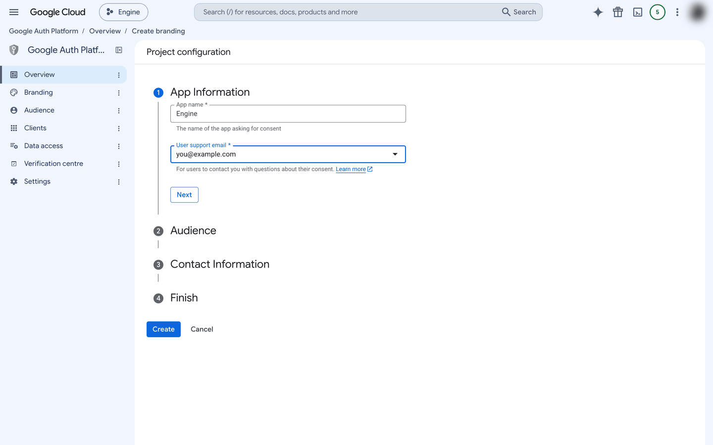
For audience, choose External. Internal limits consent to accounts inside your own Google Workspace organisation, and the people connecting Search Console properties are generally outside it.
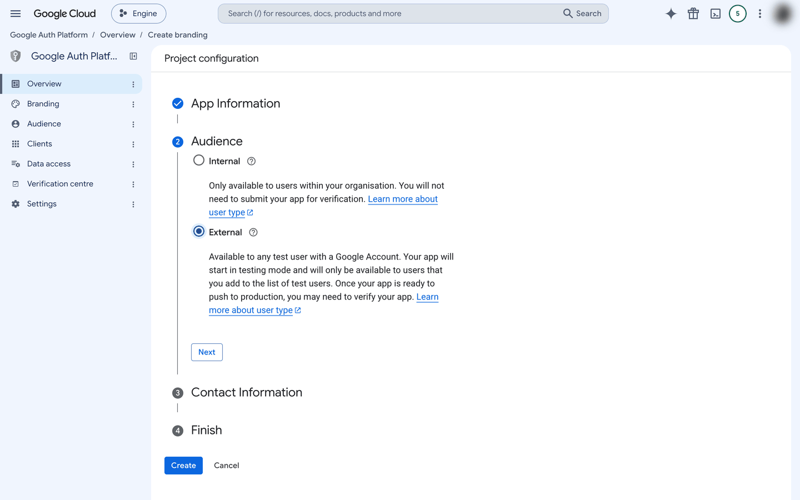
Add an address for Google's notices about the project, then accept the Google API Services User Data Policy on the last step and choose Create.
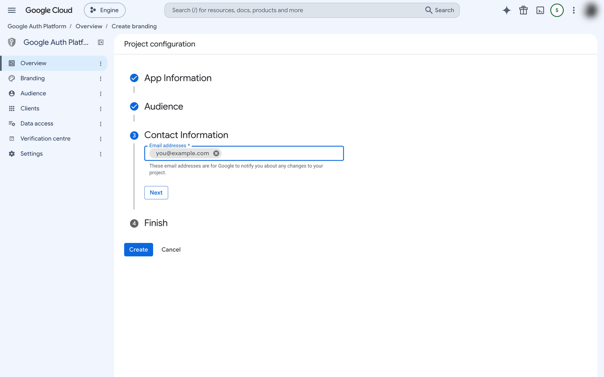
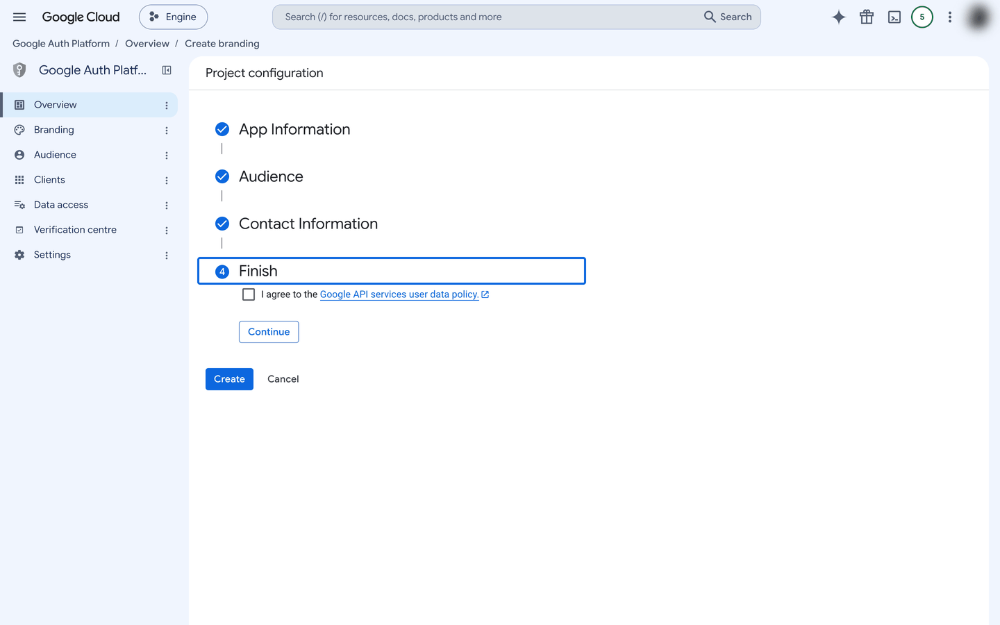
Create the sign-in client
Under Clients, choose Create client and set the application type to Web application. Engine completes the sign-in on the server, so the other types do not apply.
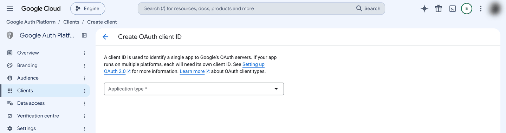
Name the client — this name is only ever shown in the console — and then add
the redirect address. It is your Engine API's own address followed by
/oauth/google/callback, so it looks like:
https://api.example.com/oauth/google/callbackThe wrong field. This belongs under Authorised redirect URIs, not Authorised JavaScript origins. The two sit next to each other and both say "Add URI". Leave the JavaScript origins field empty.
An inexact address. Google compares it exactly,
character for character. A trailing slash, a missing dot, or
http where it should be https produces a
redirect_uri_mismatch error, which is the most common
first-time failure.
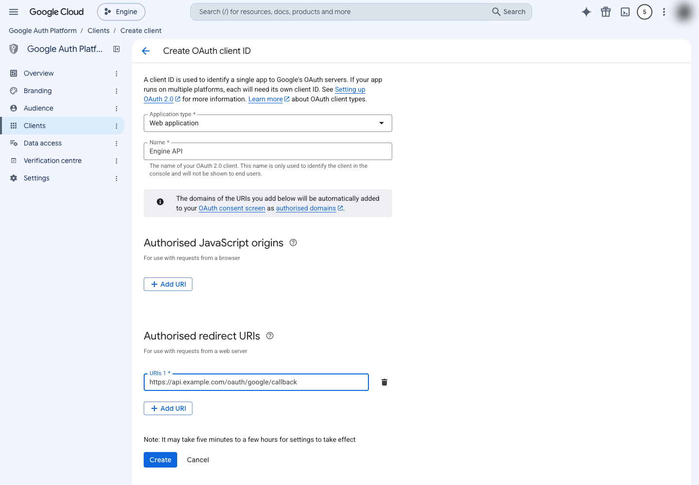
Save the client secret straight away
Choosing Create shows the client ID and the client secret once.
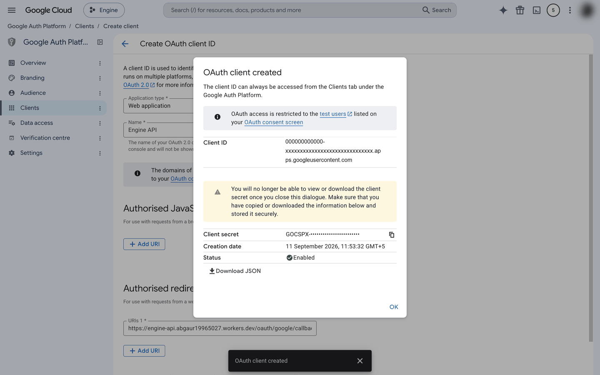
After this dialog closes, Google will not display it again. Losing it is recoverable rather than fatal: open the client under Clients and add a new secret. The client ID stays the same, so only the secret has to be updated wherever it is stored.
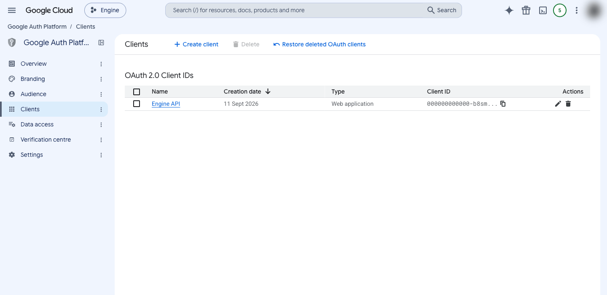
Add the people who will connect
All three kinds of access Engine asks for are treated by Google as sensitive:
| Connection | What Engine may do |
|---|---|
| Search Console | read only |
| Analytics 4 | read only |
| Business Profile | read and write |
Until Google reviews the application, consent works only for addresses you list under Audience → Test users, and the list is capped near 100 for the whole life of the application. Add every Google account that will connect.
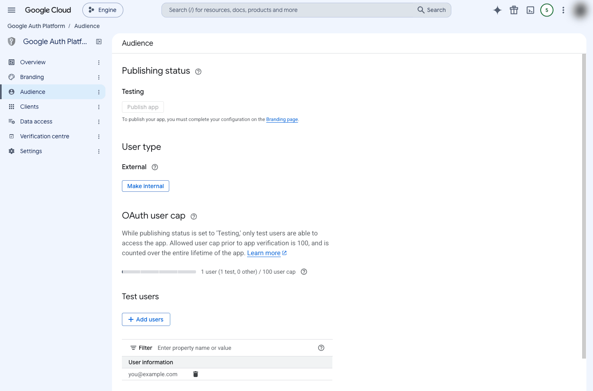
Google offers no read-only form of Business Profile access. Connecting it grants Engine the ability to change those listings, which is what publishing an approved local post or a review reply needs. There is no way to take only the reading half.
Give Engine the credential
Engine reads these as configuration values. Set them wherever your deployment keeps its secrets, never in source control.
| Name | Value |
|---|---|
GOOGLE_CLIENT_ID | From the client dialog, or the Clients list afterwards |
GOOGLE_CLIENT_SECRET | From the file you downloaded in step 5 |
GOOGLE_REDIRECT_URI | The same redirect address you registered, character for character |
ENCRYPTION_KEY | 32 random bytes. Engine seals every stored Google credential with this |
OAUTH_STATE_SECRET | A second, independent random value. Signs the sign-in request so a reply cannot be forged |
DASHBOARD_URL | Where Engine returns the browser after consent |
Once they are in place, the Google tiles in Engine's Integrations screen stop saying setup is required and offer a sign-in button instead. That is the signal Part 1 is finished.
Changing it makes every existing connection unreadable. The sealed credentials can no longer be opened, and every customer has to connect again. There is no way to re-seal them under a new key, so this is not a value to rotate casually.
Review, before opening it to everyone
While the publishing status is Testing, Google shows an "unverified app" warning and honours only the test-user list. That is workable for a known group. It does not work for open sign-up.
Google's review needs a home page on a domain you own and have verified, a published privacy policy, a written reason for each kind of access you request, and a demonstration video. It commonly takes several weeks, so begin it before you need it. The heavier security assessment applies to the most restricted kinds of access, such as Gmail and Drive, and not to these three.
Part 2 — Connect your Google account
This is the part a customer does, and it is short.
Open Integrations and choose a site
Go to Integrations and pick a site first. Connected accounts stay empty until you do, because a connection belongs to the client rather than to a single site.
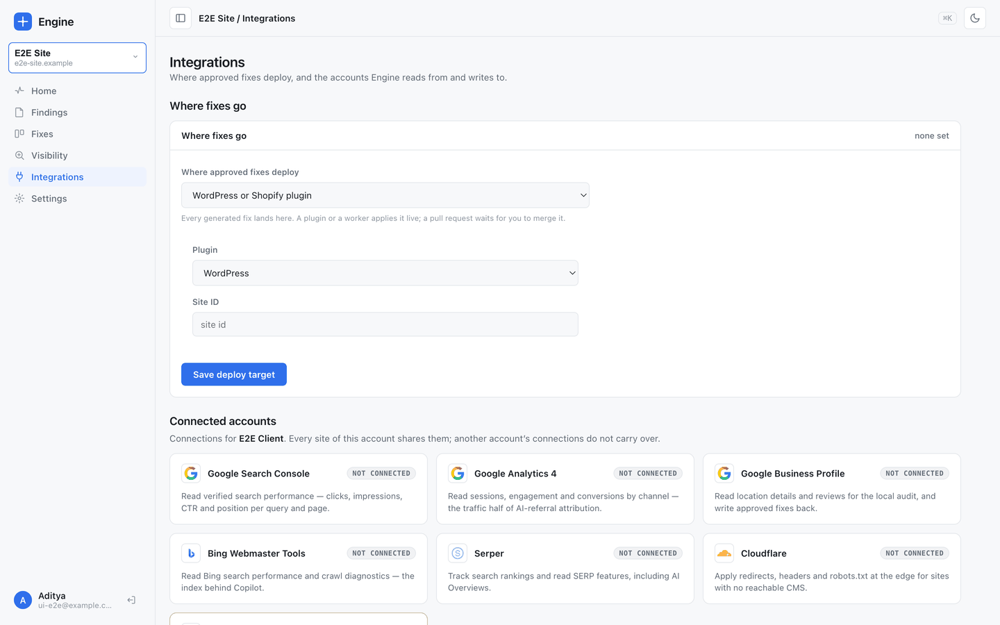
Choose a tile, then sign in with Google
Selecting a tile opens a panel with the single thing that connection needs. For the Google ones, that is a Google sign-in.
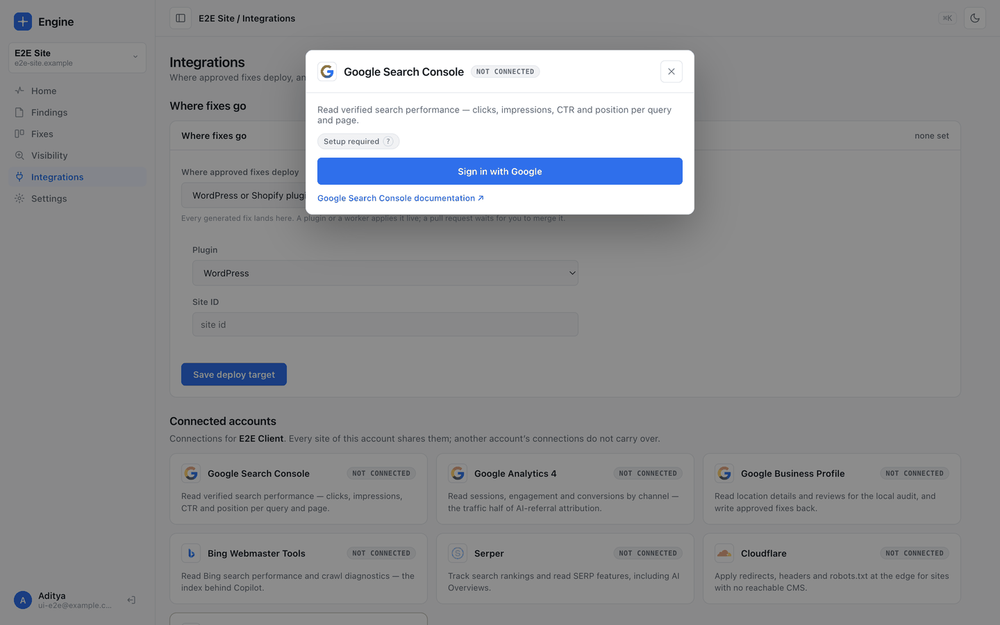
Pick the right Google account
Engine hands you to Google. Choose the account that can actually see the properties you want, which is not always the one you use to sign in to Engine.
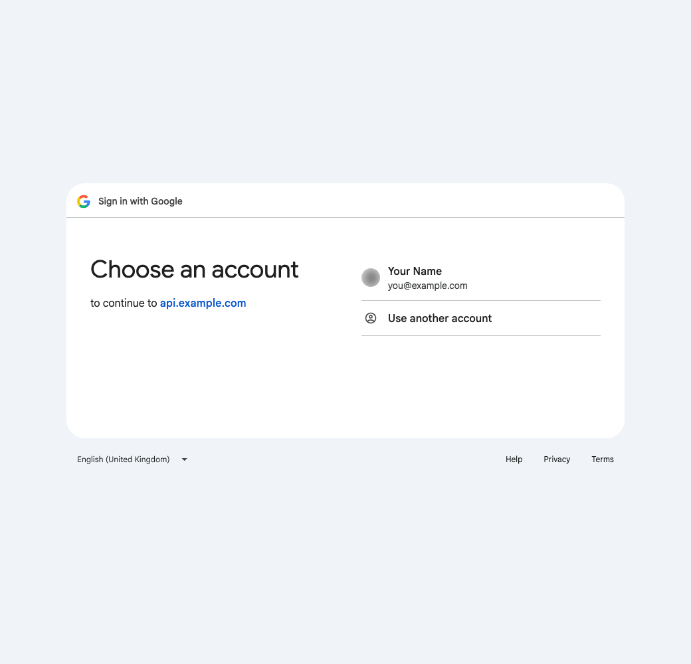
Google then asks you to confirm what you are sharing.
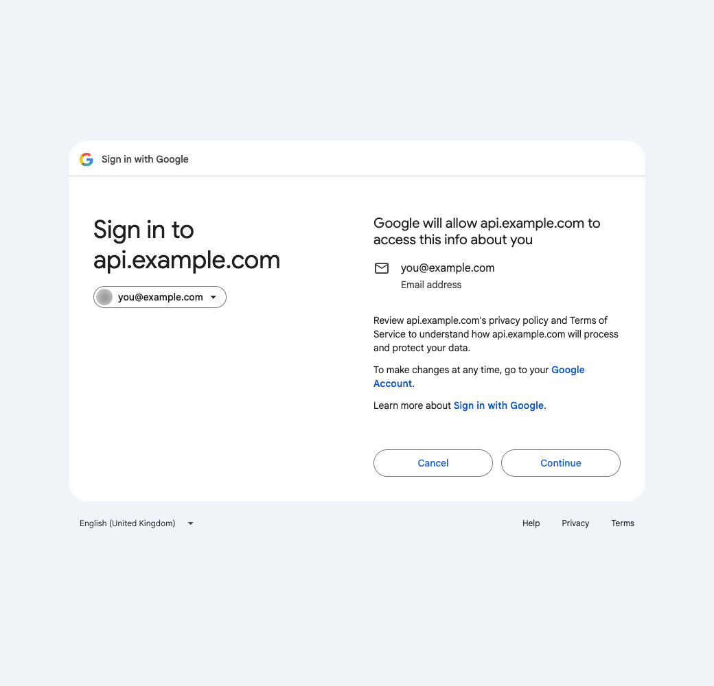
Until Google finishes its review, these screens name the application's web address rather than its display name, and show an unverified app warning. That is expected, and it is the same gate described in Part 1, step 8.
After you approve, Google returns you to Engine, which stores the credential in sealed form and marks the tile connected.
Assign a property to a site
Signing in does not tell Engine which property belongs to which site. Choose it in the same panel and assign it.
- Search Console and Analytics 4 — one property per site.
- Business Profile — many locations per site, and each assignment names the brand it writes to.
A connection belongs to the client, not the site. An agency signs in once with an account that can see forty clients' properties, then assigns them to the right sites. Connecting again later does not discard those assignments.
If something goes wrong
| What you see | What it means |
|---|---|
redirect_uri_mismatch | The address registered with Google and the one Engine is configured with are not identical. Compare them character by character, including https and any trailing slash. |
| Google refuses the account | That address is not on the test-user list, or the roughly hundred places are used up. |
| Connected, but no properties to pick | For Analytics, the Admin service is not switched on. |
| Connected, but Business Profile reads fail | The Business Profile access request has not been approved yet. Expected until it is. |
| Everyone suddenly has to reconnect | ENCRYPTION_KEY changed, so the sealed credentials can no longer be opened. |
| The tile still says setup is required | Part 1, step 7 is incomplete for this deployment. |